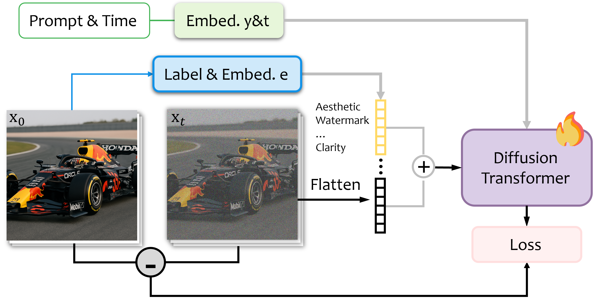

The success of modern text-to-image generation is largely attributed to massive, high-quality datasets. Currently, these datasets are curated through a filter-first paradigm that aggressively discards low-quality raw data based on the assumption that it is detrimental to model performance. Is the discarded bad data truly useless, or does it hold untapped potential? In this work, we critically re-examine this question. We propose LACON (Labeling-and-Conditioning), a novel training framework that exploits the underlying uncurated data distribution. Instead of filtering, LACON re-purposes quality signals, such as aesthetic scores and watermark probabilities as explicit, quantitative condition labels. The generative model is then trained to learn the full spectrum of data quality, from bad to good. By learning the explicit boundary between high- and low-quality content, LACON achieves superior generation quality compared to baselines trained only on filtered data using the same compute budget, proving the significant value of uncurated data.

@article{liang2026lacon,
title={LACON: Training Text-to-Image Model from Uncurated Data},
author={Liang, Zhiyang and Wan, Ziyu and Liu, Hongyu and Chen, Dong and Shen, Qiu and Zhu, Hao and Chen, Dongdong},
journal={arXiv preprint arXiv:},
year={2026}
}